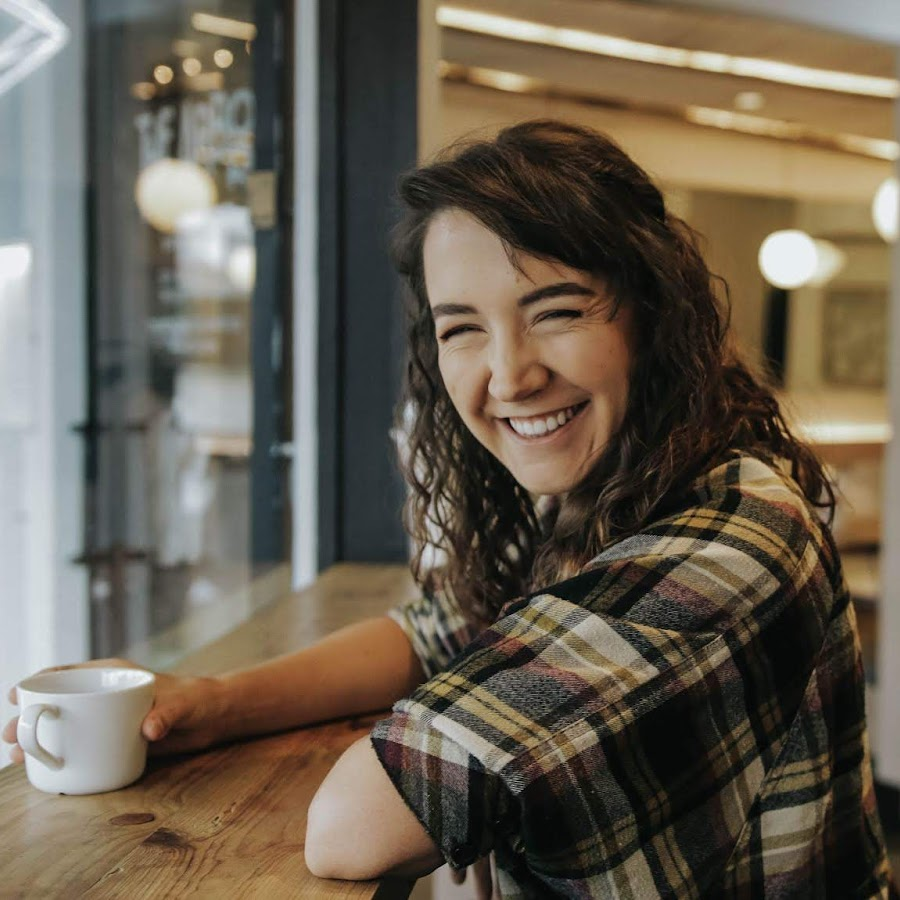

Alayna Joy
Alayna Joy Fender, formerly known as MissFenderr, is a Canadian YouTuber settled in Vancouver, British Columbia. Her videos mainly consist of vlogs. She does them with friends and family members.
She also has a second channel called MissAlaynaa, which started off with her doing beauty videos up until December 2014, when it turned into a daily Vlog channel, following the yearly vlogger trend, "Vlogmas", where one would vlog every day from the start of December up until Christmas. She has since continued vlogs often on this channel.